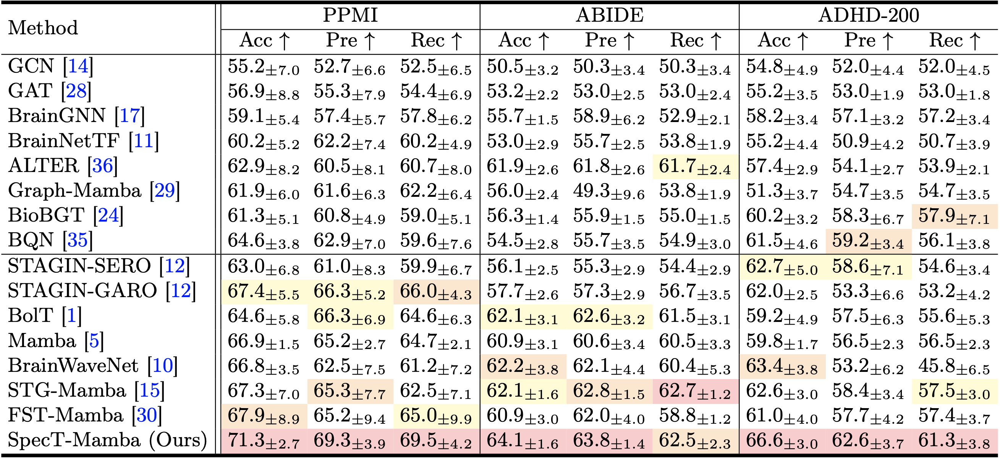
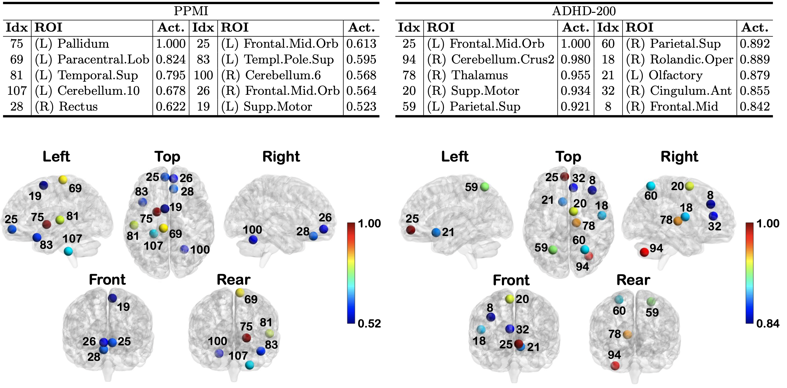
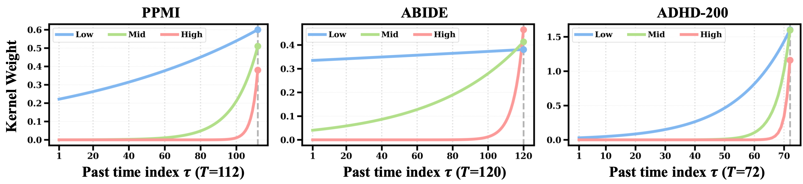
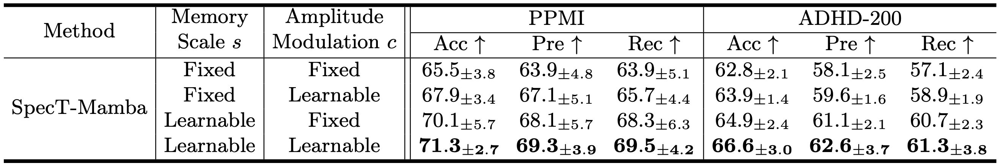

Table: Comparison of classification performance between static (top) and spatio-temporal (bottom) methods on the three rs-fMRI brain network benchmarks. The best, second-best, and third-best results are highlighted.

Figure: Top: The Grad-CAM results describing the top-10 ROIs with the highest activation (Act.) to classify disease on the PPMI (Left) and ADHD-200 (Right) datasets. The indices align with the index values in the AAL116 atlas, and (L) and (R) denote the left and right hemispheres, respectively. Bottom: Top-10 ROIs with the highest activation for classifying disease on the PPMI (Left) and ADHD-200 (Right). Node color indicates the activation.

Figure: Visualization of the learned spectral-temporal kernel weights on the three benchmarks. We fix the current time to the last step and plot the kernel weight as a function of the past index, where spectral indices are grouped into low-, middle-, and high-frequency bands.

Table: Ablation study on spectral-temporal coupling parameters of SpecT-Mamba.
In this work, we proposed SpecT-Mamba, a spectral-temporal framework that conditions temporal evolution on graph spectral structure. By modeling a multi-scale state-space kernel to modulate signal amplitude and temporal decay, our model captures both short- and long-range dependencies. Thus, SpecT-Mamba learns topology-aware temporal representations in which spectral channels encode dynamics relevant to neurological and neuropsychiatric disorders. Experiments on rs-fMRI datasets show that SpecT-Mamba outperforms baselines while providing insights into spectral-temporal patterns of brain dysfunction.
@inproceedings{sim2026spectral,
title={Spectral-Temporal State Space Modeling on Functional Brain Networks},
author={Sim, Jaeyoon and Lee, Hoseok and Park, Jihwan and Baek, Seunghun and Yu Zhang and Kim, Won Hwa},
booktitle={International Conference on Medical Image Computing and Computer-Assisted Intervention},
year={2026}
}